Zennの「LLM」のフィード
フィード
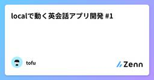
localで動く英会話アプリ開発 #1
Zennの「LLM」のフィード
雑談やっぱり、夏はうどんが最強‼︎ってことでうどんを食べてきましたー運動してた頃はたっくさん食べれていたのに、運動やめてから食べる量が減り、大盛りを食べるのが辛くなってきた…美味しいものをたくさん食べれる胃袋が欲しいので運動ちゃんとやろうかなーなんか、運動してた時より痩せてるしショックを受けている今日この頃です 何するの？英語を使う機会が増えて、英語ができたら楽しいんだろうなって思い始めました。そんな中で、最近、AIと英会話するアプリケーションをよく見かけます。めっちゃ良さげだけど、月額料金がかかるため、金欠大学生にはハードルが高い…あれ、こんな感じの英会話アプリ...
7時間前
知っておくべきプロンプトインジェクションの脅威と対策
Zennの「LLM」のフィード
はじめに2025年、LLMの活用が急速に広がる中、新たなセキュリティリスクが浮上しています。OWASP（Open Web Application Security Project）が発表した「LLMアプリケーションのトップ10脆弱性」では、プロンプトインジェクションが第1位にランクされました。実際、プロンプトインジェクション攻撃による実害も各所で報告されており、企業や組織にとって無視できないリスクとなっています。本記事では、2025年のGoogle Cloudの中国展開シンポジウムで紹介された最新のLLMセキュリティ対策を参考に、プロンプトインジェクション攻撃の手法と防御策につい...
9時間前
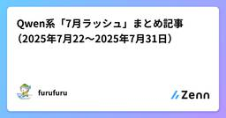
🚀 Qwen系「7月ラッシュ」まとめ記事（2025年7月22〜2025年7月31日）
Zennの「LLM」のフィード
🚀 Qwen系「7月ラッシュ」まとめ記事この1か月だけで少なくとも6つの主要リリースが雪崩れ込みました。公式ブログ・HFモデルカード・ツイートを突き合わせ、「何が出て／何が変わったか」を俯瞰します。⸻ 📊 一覧表：日付順ハイライト日付モデル / ツールパラメータ構成コア特徴典拠7/22Qwen3-Coder-480B-A35B-Instruct480B 全体 / 35B アクティブ (MoE)256K→1M トークン、長ホライズン RL、SWE-Bench SOTAHF Model7/24Qwen Code CLI (npm)—Gem...
14時間前
喋るClaude Code：目grepからの卒業 - 音声対話で実現する並列AI活用術
Zennの「LLM」のフィード
はじめに：なぜ「喋るClaude Code」が必要なのか現代の開発現場では、AIを活用したマルチタスクによる生産性向上が求められています。しかし、従来のAIとのやり取りには大きな課題がありました。「目grep」問題 - AIのレスポンスを素早く読み取り、理解し、次のアクションを決定する。この一連の作業は視覚に大きく依存しており、並列タスクを進める上での最大のボトルネックとなっていたのです。 解決策：音声フィードバックのSub Agent「喋るClaude Code」は、Microsoft Edge Text-to-Speech(TTS)を活用し、AIのレスポンスを自然な...
16時間前
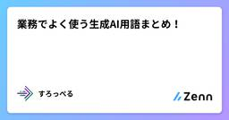
頻出するなぁと感じる生成AI用語まとめ
Zennの「LLM」のフィード
生成AIの用語まとめ LLM (Large Language Model)大規模言語モデルの略称。Transformerをベースに、膨大なテキストデータを学習したAIモデルのこと。ChatGPTやGeminiなど。 モデルの次元モデル名の 8b , 127b などの部分。billion の b でモデルにおける次元の数値。数値が大きいほど、高精度でファイルサイズが大きい。 トークンとチャンクトークンとは、LLMがテキストを処理するため、文章を分割すること。英語の場合、単語単位での分割が主流日本語の場合、サブワード化での分割が主流。形態素要素解析は下火？...
1日前
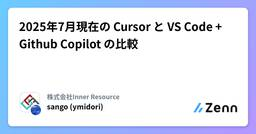
2025年7月現在の Cursor と VS Code + Github Copilot の比較 1
1
Zennの「LLM」のフィード
はじめに僕は普段 Cursor を使って開発しているのですが、チームでは Github Copilot を利用しているので、両者のメリデメを整理するために記事を作成しました。比較記事は過去のものがたくさん存在していますが、アップデートによって状況が大きく変わるため、あらためて作成しています。 🔧 前提ツールひと言で言うと導入方法VS Code ＋ GitHub Copilot“VS Code に AI（Github Copilot）を拡張”Marketplace で Copilot 拡張機能を追加Cursor“VS Code を fork し...
1日前
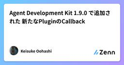
Agent Development Kit 1.9.0 で追加された 新たなPluginのCallback
Zennの「LLM」のフィード
こんにちは、サントリーこと大橋です。今日(2025/07/24)Agent Development Kit(以下 ADK) 1.9.0がリリースされました。https://github.com/google/adk-python/releases/tag/v.1.9.0主な更新内容はadk webで起動するFastAPIサーバーをモジュール化し、再利用・カスタマイズしやすい形式に変更新たなPluginのCallback(on_tool_error_callback, on_model_error_callback)追加GeminiのRetryOptions今回はこの中で...
1日前
生成AIにおけるハルシネーション防止するには？
Zennの「LLM」のフィード
こんにちは今回は、生成AI、特に大規模言語モデル（LLM）の利活用において避けて通れない課題である「ハルシネーション」について、私が実践している具体的な対策を社内LT会で発表しましたので共有をします！先に言っておくと、魔法の銀の弾丸はありませんが、現実的かつ再現可能なアプローチをご紹介します。 ハルシネーションとはハルシネーションとは、AIが誤った情報を「幻覚」のようにユーザーに認識させてしまう現象を指します。最大のリスクは、誤情報を“正しい”かのように提示してしまう点にあります。特に、重要な意思決定が絡むケースでは、出力内容の信頼性を担保するための工夫が必須です。...
1日前
DifyなどAI社内活用の試行錯誤の末に辿り着いたのは、Notion AIだった
Zennの「LLM」のフィード
はじめに企業での生成 AI 活用は今や必須となりましたが、セキュリティや運用コストの観点から導入ツールに悩む企業も多いのではないでしょうか。私たち Contrea でも 2024 年初頭からさまざまな 社内AI ツールを試行錯誤してきました。最終的に Notion AI に落ち着いた経緯と、その決め手となったポイントについてお話しします。 企業 AI 導入の課題ChatGPT の登場当初、最大の課題はセキュリティでした。社外秘情報を安全に扱えないため、多くの企業が導入を躊躇していました。そこで私たちが最初に検討したのは、学習やデータ保持を行わないAPI を活用したオンプレ...
2日前
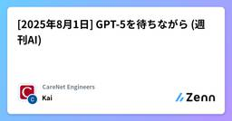
[2025年8月1日] GPT-5を待ちながら (週刊AI)
Zennの「LLM」のフィード
こんにちは、Kaiです。今週はあまり大きな話題はありませんでした。Claude Codeノウハウも一段落して、皆それぞれの使い方で最適化してきたようなイメージですね。ただ、最近のアップデートで急に能力が下がったという話も出ており、ダウングレードして使っている人もいるようです。当社ではDevinも使い始めましたが、まだなかなか使いこなせていません。やはりノウハウの言語化、暗黙知のナレッジ化とセットで進めなければ、意図しない動作が増えてしまうと感じています。それと、やはり何か詰まったときの問題解決能力では、Claude Codeが頭一つ抜けているように思います。さて、そしてGPT-5の...
2日前
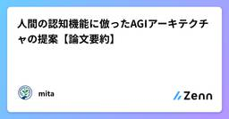
人間の認知機能に倣ったAGIアーキテクチャの提案【論文要約】
Zennの「LLM」のフィード
はじめにこんにちは、AIエンジニアを目指しているmitaです！今回は、A Universal Knowledge Model and Cognitive Architecture for Prototyping AGIという2024年1月ごろにArtem Sukhobokov氏らが発表したAGIを構成するアーキテクチャを提案している論文を要約 & 考察していきます。https://arxiv.org/pdf/2401.06256 論文要約- AGIを「人間のように多様な課題を解き、異なる領域に適応する存在」と定義- それを作成するために人間の認知機能をモデル...
2日前
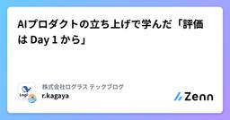
AIプロダクトの立ち上げで学んだ「評価は Day 1 から」
Zennの「LLM」のフィード
!この記事は毎週必ず記事がでるテックブログ Loglass Tech Blog Sprint の102週目の記事です！2年間連続達成まで残り4週となりました！初めまして、ログラスのKagaya（@ry0_kaga）です。ここ1年弱の間はAIプロダクトの新規立ち上げに勤しんでいました。アイディア・営業スライドだけから始まり、MVPリリース、更新まで回すことができましたが、その過程で色々な反省や学びがあります。今回はその中でも評価・Evalにフォーカスして、体験・失敗談についてセルフ振り返りをしてみます。!こうすべき！というベストプラクティスやレベルの高い取り組み、具体の提...
2日前
TradingAgentsを使ってみた
Zennの「LLM」のフィード
TradingAgents とはTradingAgents は、実世界の金融取引組織における職能分担を模倣することで、LLMを用いた金融市場分析および取引判断の研究を支援する目的で設計された、マルチエージェント型のフレームワークです。https://github.com/TauricResearch/TradingAgents各エージェントは以下のような役割を担い、段階的に分析を進めていきます： アナリスト層（分析の基盤）ファンダメンタルズアナリスト：企業財務・業績データをもとに内在価値とリスクを評価センチメントアナリスト：SNSや市場心理をスコアリングし短期的ム...
2日前
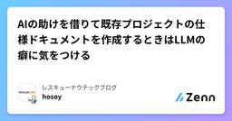
AIの助けを借りて既存プロジェクトの仕様ドキュメントを作成するときはLLMの癖に気をつける
Zennの「LLM」のフィード
所属プロジェクトが変わったので、移動先のプロジェクトの概要や仕様を把握する必要がでてきたのですが、いくつかの壁がありました。このプロジェクトは複数のサービスで構成される。各サービスが果たす役割や扱うデータなどの概要を説明したドキュメントは存在するが、詳細な仕様が書かれたドキュメントがない。各サービスがローカル環境では実行できない（ローカル環境を使用した開発が行われていない）各サービスは主にJavaで書かれているが、私はJavaに触れたことがない。そこでプロジェクトの各サービスの仕様を把握するために、ドキュメント作成とローカル開発環境の構築がプロジェクト移動後の最初のタスクと...
2日前
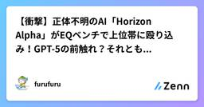
【衝撃】正体不明のAI「Horizon Alpha」がEQベンチで上位帯に殴り込み！GPT-5の前触れ？それとも...
Zennの「LLM」のフィード
突如現れた謎のAI「Horizon Alpha」に業界騒然2025年7月30日、OpenRouterに正体不明のAIモデル「Horizon Alpha」が突如登場し、AI界隈に衝撃が走っています。開発元は完全に秘匿、しかしEQ-Bench3でGPT-4oクラスの高スコアを記録し、256k tokenの長文処理が無料という破格の条件で注目を集めています。 📊 まず数字で見る「Horizon Alpha」のインパクト項目内容公開日2025-07-30開発元非公開（"cloaked model"表記）料金完全無料（テスト期間中）コンテキ...
2日前
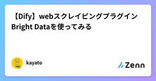
【Dify】webスクレイピングプラグイン Bright Dataを使ってみる
Zennの「LLM」のフィード
公式リリースhttps://x.com/DifyJapan/status/1948673008446701617📢 Dify × Bright Data 新時代のWebスクレイピング！DifyとBright Dataの連携が新たに可能になり、Webからのデータ収集・スクレイピング作業を大きく効率化できます。市場調査や競合他社の動向監視、そして新規顧客の発見といった重要なタスクを、50を超えるプラットフォームで自動化する力をDifyアプリケーションに追加できます。2つのシンプルな連携方法：1）すぐに使えるプラグイン：Difyマーケットプレイスから導入するだけ。詳細はこちら ...
2日前
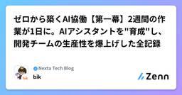
ゼロから築くAI協働【第一幕】2週間の作業が1日に。AIアシスタントを"育成"し、開発チームの生産性を爆上げした全記録 4
Zennの「LLM」のフィード
「この仕様、誰に聞けば分かるんだっけ…？」開発チームなら、一度は経験するこんな場面。その原因は、ドキュメントが古びて"遺跡"化しているか、更新が追いつかないか、あるいは——そもそもドキュ-メントなんてものが、存在しないか。私たちのチームが直面していたのは、まさに最後の「ドキュメントが無い」という状況でした。全てがチームメンバーの頭の中にしかない、いわゆる"暗黙知"の状態です。正直、ドキュメント作りって、めちゃくちゃ大事なのは分かっているけど、ゼロから作り上げるのは、本当に骨の折れる作業なんですよね。もし、そんな絶望的な状況から、チームの"教科書"となるドキュメントをたった1日で作...
2日前
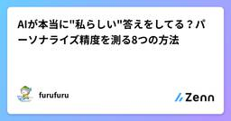
AIが本当に"私らしい"答えをしてる？パーソナライズ精度を測る8つの方法
Zennの「LLM」のフィード
はじめにこんにちは！データサイエンティストのふるるんです。生成AIをサービスに組み込む際、個々のユーザーに合わせてモデルを最適化（パーソナライズ）した後、本当にそのユーザーにフィットしているのかを定量的に検証する工程って、意外と見落とされがちなんですよね。本記事では、最新研究で提案されている 8種類のローカル評価指標 を整理し、N1読者（生成AI活用に興味があるエンジニア〜PM）向けに 具体的な計測フローと直感的な評価例 を紹介します。Kaggleでの分析経験も活かして、実践的な内容にまとめてみました！ 1. 8つの評価指標一覧#指標カテゴリ代表メトリクス (...
3日前
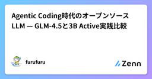
Agentic Coding時代のオープンソースLLM — GLM-4.5と3B Active実践比較
Zennの「LLM」のフィード
Agentic Coding時代のオープンソースLLM — GLM-4.5と3B Active実践比較「AIにコードを書かせるだけでなく、ツールを使わせて複雑なタスクを自動化したい」「でもOpenAI APIのコストとデータ流出リスクが気になる」—— そんなAgentic Coding時代の課題に、オープンソースLLMが新たな解を提示しています。2025年1月、GLM-4.5（Z.ai）とQwen3-30B-A3B（Alibaba Cloud）という、コーディング＋エージェント機能に特化した強力なオープンソースLLMが相次いでリリースされました。どちらもGPT-4レベルの性能を持...
3日前
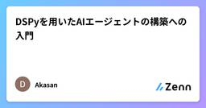
DSPyを用いたAIエージェントの構築への入門
Zennの「LLM」のフィード
今回はDSPyを用いてAIエージェントを開発するチュートリアルを試してみたので共有します。DSPyは昨日公開したmlflow3のプロンプト最適化に関する機能のバックボーンとして利用されていたため、気になって調べた次第です。https://zenn.dev/akasan/articles/a1fec87efaa4a6 DSPyとは？前回の記事にも書きましたが、DSPyは以下のような特徴を持つライブラリとなります。モジュール型AIソフトウェアを構築するための宣言型フレームワークであり、脆弱な文字列ではなく構造化されたコードを高速に反復処理でき、AIプログラムを言語モデルに適した効...
3日前